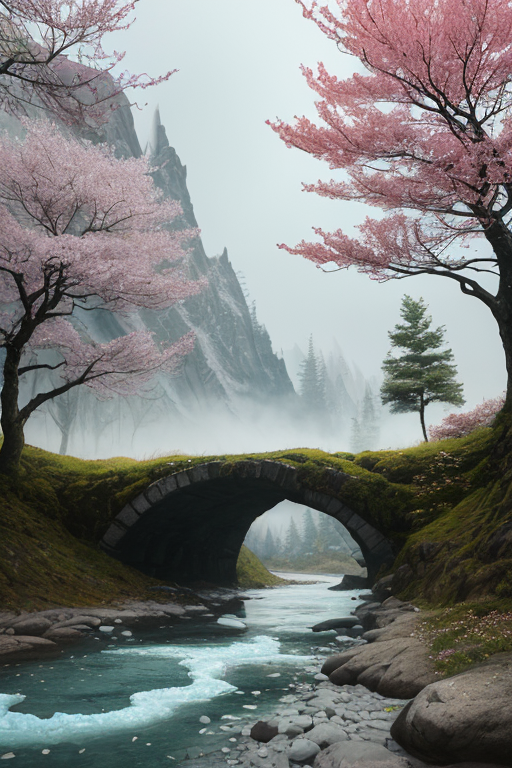
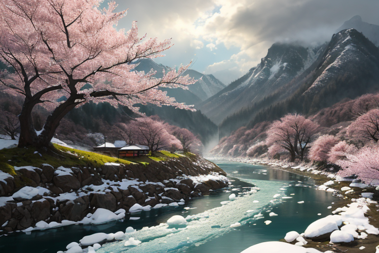
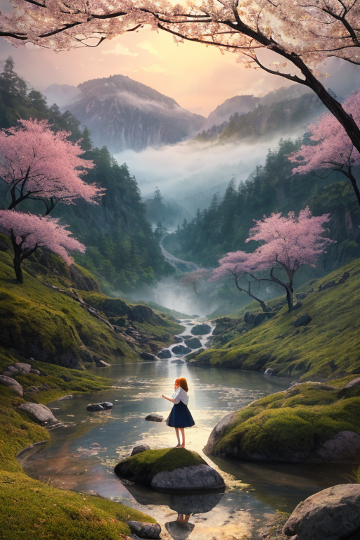

第一章 現実の山形
あなたはまだ気づいていない。この土地にも、王がいることを。
山寺の石段は、松尾芭蕉が「閑さや岩にしみ入る蝉の声」と詠んだその日から、変わらずに苔を纏っている。登る者の息を奪い、足を震わせる。ここは、待つことを修行とする場所だ。修験者たちは、この急峻な階段を、己の内なる山と向き合うための儀式とした。今、観光客がその石段に腰を下ろし、汗を拭いながら眼下の町並みを見下ろす。彼らが感じるのは、達成感か、それともただの疲労か。
その石段の最も古い段の影に、一人の青年が佇んでいた。ヤマガリア・フルクト、実りと忍耐の王である。彼の目は、登っては休み、また登る人々の背中を、穏やかに見つめている。結果である山頂より、そこに至る「過程」そのものに、彼は価値を見出していた。しかし、心の奥底には、常に一つの問いが蠢く。この土地の、この人々の、果てしなく続くような忍耐。それは、確かな実りを待つ崇高な行為なのか。それとも、変化を恐れるが故の、静かな敗北なのか。風が吹き、さくらんぼの木々がかすかに揺れた。

第二章 歪みの兆候
蔵王の山肌に、巨大な樹氷が歪んだ影を落とす。それは本来、冷気と風が織りなす自然の彫刻だ。しかし今、その形に不自然なねじれが生じていた。妖精フルッタが、枝のような指で樹氷の表面を撫でる。「地脈の震えが、ここにも及んでいます。忍耐の波長が乱れ始めている」
歪みは歴史の層を伝ってくる。松尾芭蕉が最上川を下ったその川面に、今、微かなうねりが立つ。彼が詠んだ「五月雨をあつめて早し最上川」の勢いは、時に暴流へと変じうる危険を内包していた。王ヤマガリア・フルクトは川辺に立ち、水の音に耳を澄ます。増水の予兆を、ほんの一時間早く感知する。彼ができるのは、下流の漁師の船を、無意識のうちに岸に繋ぎ直させることだけだ。
「待つことが、この土地の美徳でした」とフルッタが囁く。「雪に耐え、実りの時を待つ。しかし、このまま何も変わらずに耐え続けることは…」言葉を継がず、サクランがそっと彼女の肩に触れる。
王は銀山温泉の街並みを見下ろした。変化を恐れず新たな泉脈を求めた先人たちの歴史と、時が止まったかのような佇まい。その狭間で、問いは深まる。耐えることと、動かないことの境界は、どこにあるのか。

第三章 王の葛藤
蔵王の樹氷が、風に削られて形を変えていく。歪みの微調整は、常にこのようなものだ。王は、山形の地に流れる「忍耐」の波を感じていた。それは、春を待つ雪のように深く、実りの秋を信じる夏の陽射しのように確かだった。しかし今、その波の底に、微かな、しかし確かな「焦り」が混じり始めている。変革線の影響だ。
「動かぬことは、安全ではないのです」とサクランが言った。彼女の手から、さくらんぼの花が一枚、ひらりと舞い落ちる。「この花も、咲かずに萎れる選択はありません。時を待ち、そして咲く。それが実りです」
王は最上川の流れを見つめた。芭蕉が詠んだ川は、常に動き、岸を少しずつ変えながら、海へと向かう。待つこと。それは、流れを止めることとは違う。次の流れへと備える、静かなる動作なのか。それとも、ただ流れに身を任せ、自らの意志を失うことなのか。
彼は、地中で蠢く歪みの力を感じた。大きく動かせば、歴史は変わる。しかし、その代償は計り知れない。彼は調整者であって、破壊者ではない。
第四章 妖精との対話
蔵王の樹氷が、風に削られて微かな音を立てる。その傍らで、フルッタは温かな湯気を立てる芋煮の鍋を前に、静かに語り始めた。
「王よ。待つことは、決して何もしないことではありません。この鍋のように、中でじっくりと素材の旨味を引き出す時間。それが、私たちの『待ち』です」
彼女の目は、遠くの山々を見据えていた。
「しかし、時には鍋の蓋を開け、大きくかき混ねなければならない瞬間もあります。素材が焦げ付き、全てが台無しになる前に。今、地中の歪みは、『かき混ねる』時を告げています。大きな調整は、必ず周囲に波紋を起こします。温泉の湧き出る場所が変わるように、歴史の流れも変わるでしょう」
王は黙って聞いていた。
「待ち続けることが、かえって全てを腐らせる敗北になることもあります。あなたは『調整者』です。破壊者ではありません。けれど、時には痛みを伴う選択をしなければ、守れるものも守れなくなる。それが、この激動の世界線が私たちに突きつけている『産革』なのです」
フルッタの声には、母性的な優しさと、揺るぎない覚悟が共存していた。

第五章 微調整と余韻
蔵王の樹氷が、夜明けの光を静かに反射していた。歪みの波は、山形の地盤を、ゆっくりと確実に押し上げようとしていた。数百年に一度の大きな「ずれ」が、今、起ころうとしている。王は立石寺の岩肌に手を当て、地の底から伝わる鼓動を感じ取った。待てば、この歪みは自然に解消されるかもしれない。だが、その間にも、蔵王の温泉街は崩れ、最上川は氾濫し、多くの実りが失われる。待つことは、確かな敗北だった。
「……よか。」
王は、自らの王国の核である「実りの枝」の紋章に、全ての力を注ぎ込んだ。それは、歪みそのものを消すことではない。巨大なエネルギーが一点に集中するその「瞬間」を、ほんの一瞬、ほんの数秒だけ、別の方向へ「ずらす」微調整だ。代償は、この地に蓄えられた百年分の「実りの力」、そして王自身の存在の大半であった。
地鳴りは轟いた。だが、その衝撃は蔵王連峰の奥深く、人のいない岩盤で解放された。温泉街は揺れ、最上川は濁流となったが、決壊は免れた。山寺の石段は幾つか崩れたが、芭蕉が詠んだ風景は、かろうじて形を留めていた。
王の姿は、山肌に溶ける朝靄のように薄れていった。傍らには、涙を流さないフルッタとサクランが、最後まで佇んでいた。残されたのは、傷ついた大地と、かすかに残る朱と緑の光の粒、そして「待たなかった」という選択の余韻だけである。
あなたの町にも、王がいる。